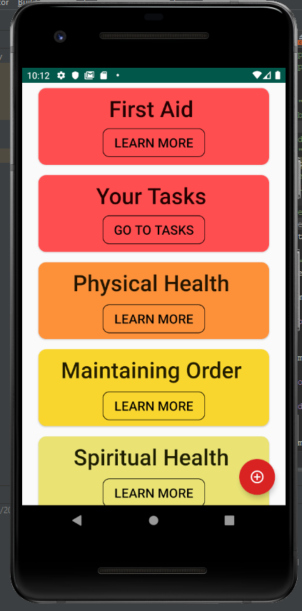
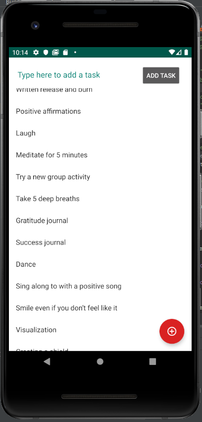
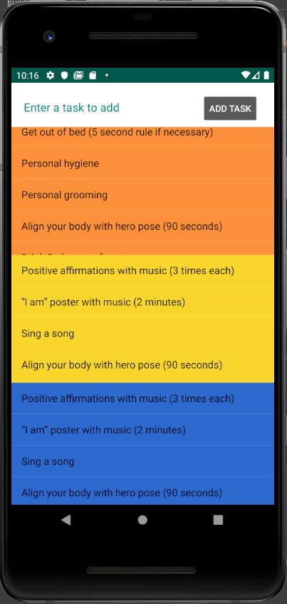

Hope for Healing Foundation is a non-profit group based out of Salt Lake City, Utah. I am currently working on development. This prject started out as a group of three students but is now a project that I am working on by my self. This app allows the user to view different aspects of their life and find tasks that they can do to help them fight their depression. Below are pictures that represent the app. Featured are the home screen, tasks sceen, and phases screen. The home sceen acts as a navigation to all of the other screens. The tasks screen shows different things that they can do to help them in that area. The phases screen shows the what things they should be doing in the morning, afternoon, and evening.
  I helped to develop a website for the Idaho Injury Law Group. I created a members area only
accessable to those with a account for the company. In addition to this it allowed for
contact information to be collected and submitted to the company.
Note: Becuase
this
site is currently in development, I am unable to publish an example right now but feel free
to contat me for more explanation.
I developed a skiing help website. In this website I implemented a database that holds
various different resorts. It allows a visitor to view the different resorts in the
database. Someone can create an account and leave a review if they want. It takes these
various reviews and shows them below each resort.
Click here to go to the website: Skiing Website